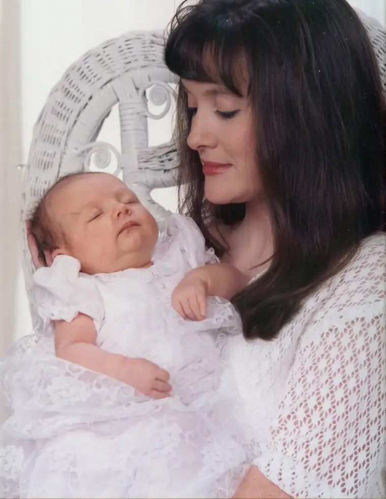
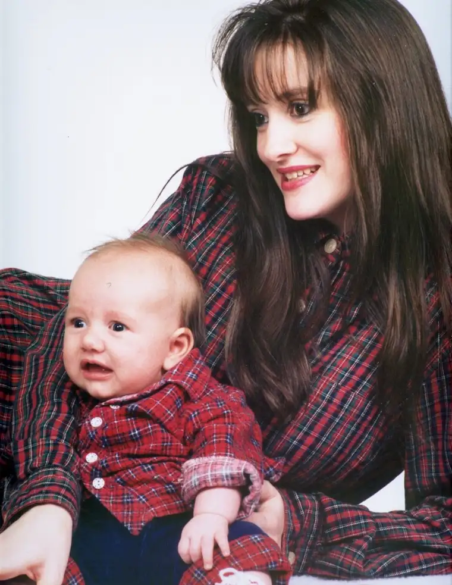

It snowed again yesterday. That’s right. May 10. Snow. But today, it’s all gone and the sun is streaming in full force, just in time to bring a pleasing warmth to mothers in this region and hopefully to those in many other corners as well. On this sun-streaked day, mothers are: enjoying the outdoors with their young ones, holed up in bed lavishing the first guilt-free nap in months, gently unwrapping gifts adorned with handcrafted designs fashioned by small hands, inhaling the smell of hand-picked flowers, eating at big, bountiful buffets and, even better, being served breakfast in bed.
This year, I didn’t have the privilege of enjoying the latter, which leads me to believe the column I wrote for The Forum last year at this time may have been more prophetic than I’d realized (below). Of course, the kids knew of the impending brunch buffet, which may have had something to do with the fact that I didn’t get my usual lumpy oatmeal and burned toast. However, so far it has been a dream day, a day to truly cherish this amazing gift of motherhood. Despite years of sticky fingers on furniture and tantrums and the endless work of keeping a house (somewhat) tidy, it is worth it, indeed, to be a mother, to have the honor of helping raise up the next generation.
Today is our day to give thanks for the most beautifully wrapped presents of all: our children.
Early on in my mothering years I started the tradition of a “Madonna and Child” photo with my little ones. I now have these portraits on a wall in my bedroom. Daily, I am made aware anew of the innocence of my children. These photos help remind me that they are still fragile beings in need of tenderness, even on days I don’t feel I have that to give. Always being mindful of the baby within brings me back to grace, hard as it is some days to summon. If nothing else, the visual is there to guide my actions.
May you mothers everywhere find ways savor this day in a special way!
Breakfast in bed
by Roxane B. Salonen
(As printed in The Forum, May 2007)
The evening before Mother’s Day last year my eight-year-old daughter began plotting a “breakfast in bed” event. “Poached eggs or oatmeal?” she asked. Next she wanted to know my time preference. “No earlier than eight,” I said, dreaming of a lazy morning.
The question that followed was even more thought-filled. “Mom, do you like Mother’s Day or your birthday best?” My daughter views her birthday as the most coveted day of the year so I knew my answer would perplex her, and it did. “Why?” she asked. “Everyone has a birthday,” I said, “but not everyone is a mother.”
The next morning I woke to the sounds of utensils clanking on a serving tray. My youngest daughter had been sent ahead to clear a path on my cluttered nightstand while the oldest presented breakfast and gifts. Their sweet smiles and giddiness wooed me out of my sleepy fog.
As I nibbled lumpy oatmeal, I remembered the question from the previous night. The longer answer, I knew, had as much to do with the honor of being a mother as knowing how fleeting this phase in my life would be. I’d be a mother the rest of my life, but my days of being served breakfast in bed would be short-lived.
My mind returned to the first year my motherhood had been acknowledged. My husband had given me a beautiful, pink flowering plant the May before our first child was born. The plant symbolized a new meaning of Mother’s Day to me. Instead of focusing only on my own mother every May, now I, too, would be the recipient of loving thoughts if I were lucky. Maybe I’d even be served breakfast in bed someday, I’d thought.
As youngsters my sister and I used to play “grown-ups,” sipping tea in plastic cups and tending to our baby dolls. “Just think, someday we’ll have kids of our own,” she had said all those years ago.
I was now living the moments of my childhood dreams.
As I opened some handmade cards and an envelope filled with fruity smelling lotion and shampoo samples, I decided that if I were to die that moment, I would die happy.
My daughters returned to gather the empty tray. Soon their bickering filled the kitchen, and I could hear my sons wrestling upstairs. My eyes closed but only for a second as I realized my baby had toddled in to silently alert me it was time for a diaper change.
The beautiful moments like those I’d experienced that morning may be all too transitory, but we walk through the mundane and even suffering times to meet these plateaus of deep fulfillment. There is no need to be too wistful, for even when our children have passed the stage of wanting to bring us oatmeal bedside, our days of serving one another and discovering life together are far from over.
This Mother’s Day I will recommit myself to savoring the mountaintop moments even while trudging through the every-day ones that make them so wondrous.
{kind=link}
{kind=link}
{kind=link}
{kind=link}
{kind=link}
{kind=link}
{kind=link}